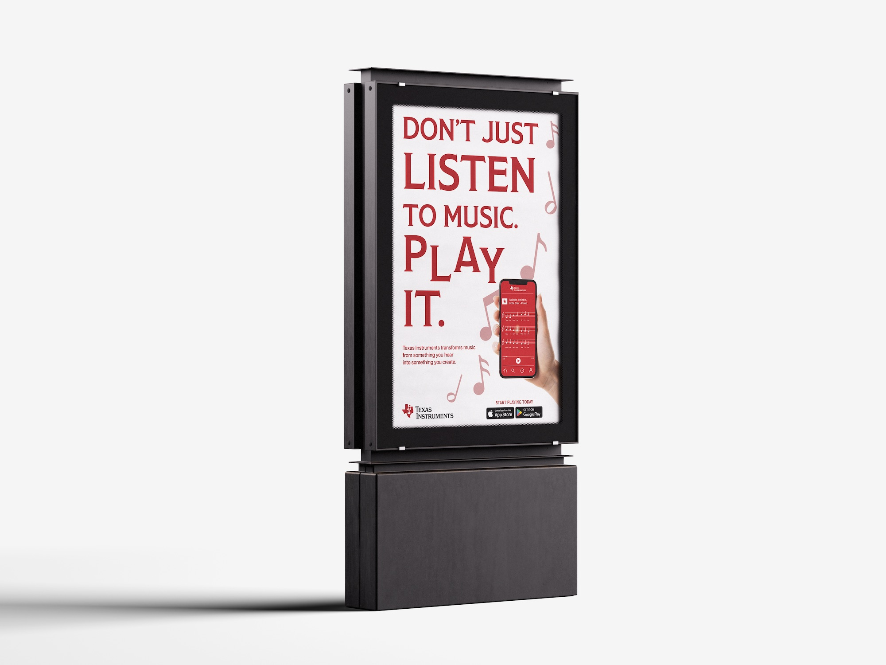
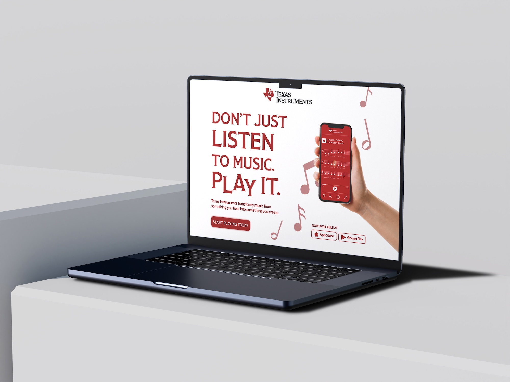
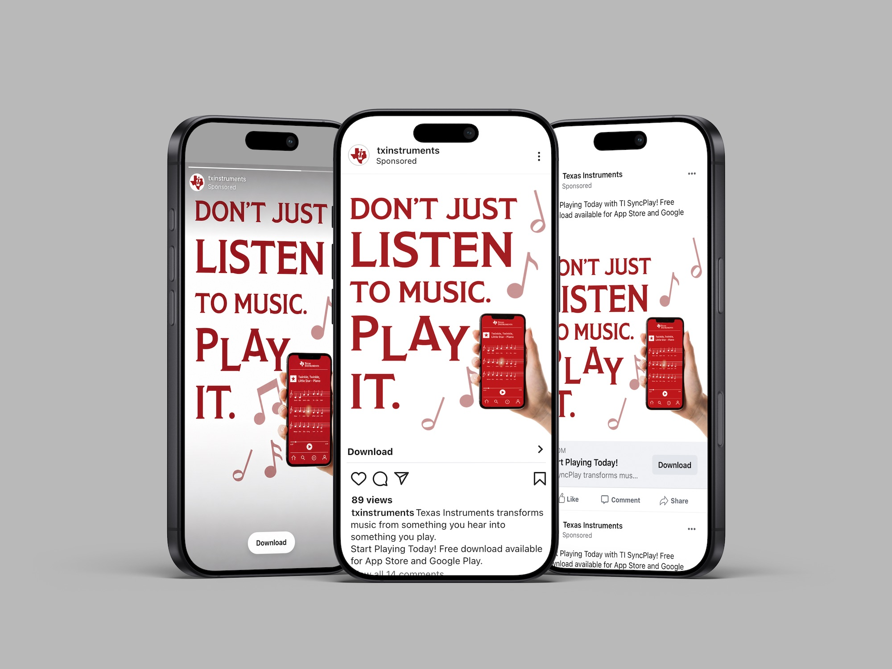
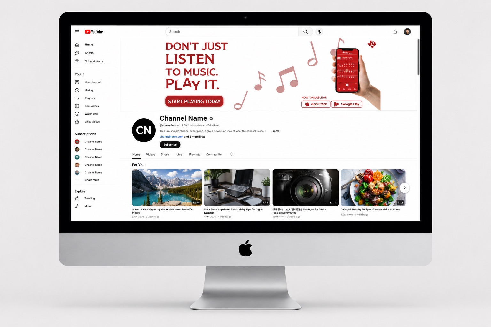

Marketing Campaign
Texas Instruments SyncPlay
A campaign concept repositioning Texas Instruments as a creative, consumer-friendly brand through a music-learning app that helps users play along in real time.

Project Description
Turning precision into creativity.
The campaign expands Texas Instruments beyond its familiar association with calculators and engineering by presenting the brand as a tool for learning, creativity, and self-expression.
The visual system was built around the slogan “Don't just listen to music. Play it.” The goal was to make the app feel approachable while still maintaining the precision and trust associated with TI.
- Built a flexible campaign system across print and digital touchpoints.
- Used strong typographic hierarchy to make the message direct and memorable.
- Balanced technology, music, and accessibility through clean visual direction.



